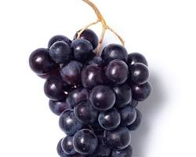

Beneficios de la Uva

Las uvas son una fruta deliciosa y nutritiva, conocida por sus numerosos beneficios:
- Ricas en antioxidantes, como el resveratrol, que protegen contra el daño celular y reducen el riesgo de enfermedades crónicas.
- Fuente de fibra, que mejora la digestión y ayuda a mantener niveles saludables de colesterol.
- Contienen vitaminas C y K, que fortalecen el sistema inmunológico y la salud ósea.
- Proporcionan potasio, que ayuda a regular la presión arterial y la función muscular.
- Contienen polifenoles, que tienen propiedades antiinflamatorias y pueden mejorar la salud del corazón.
¡Incorpora uvas a tu dieta para disfrutar de sus beneficios y mantener una buena salud!
Volver a la página principal